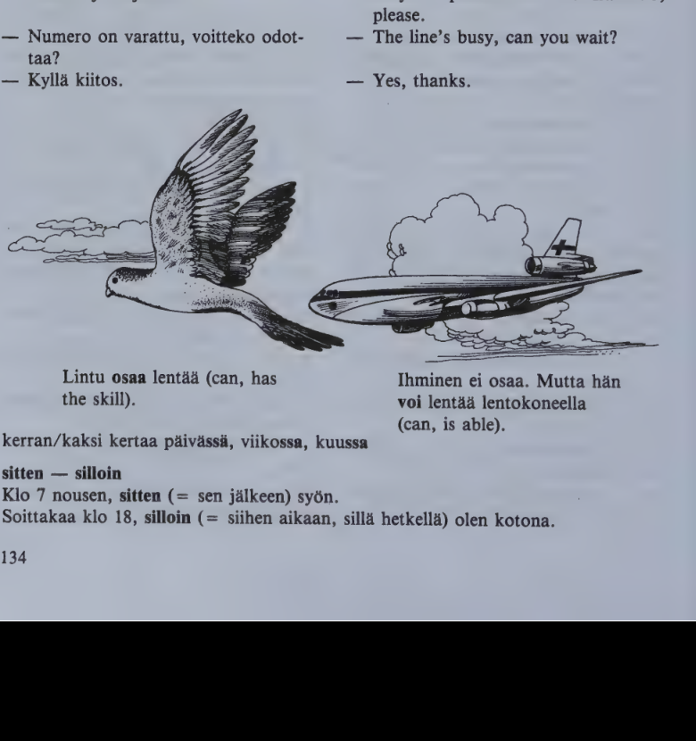
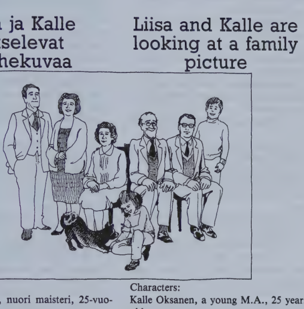

Kappale 28 / Lesson 28#
Puhelinkeskustelu / Telephone conversation#
Rouva Whitney soittaa neiti Jalavalle / Mrs. Whitney is calling Miss Jalava
(Puhelin soi. Joku vastaa puhelimeen.)
Suomi |
English |
|---|---|
1. Jalavalla. |
1. Hello (“At the Jalava’s.”) |
2. W. Taalla on rouva Whitney. Onko Kaarina Jalava tavattavissa? |
2. W. This is Mrs. W. May I speak to Miss Kaarina Jalava (“Is Miss K.J. to be met?”)? |
3. Hetkinen, olkaa hyva. |
3. Just a minute, please. |
4. J. Kaarina Jalava puhelimessa. |
4. J. Kaarina Jalava speaking. |
5. W. Hyvaa iltaa, taalla puhuu Jane Whitney. Anteeksi, etta mina hairitsen nain myohaan. |
5. W. Good evening, this is Mrs. Jane Whitney calling. Excuse me for disturbing you as late as this. |
6. J. Ei se mitaan. |
6. J. Never mind. |
7. W. Tehan annatte suomen kielen tunteja ulkomaalaisille? |
7. W. You give Finnish lessons to foreigners, don’t you? |
8. J. Niin annan. Mutta tehan osaatte puhua suomea. |
8. J. Yes, I do. But you can speak Finnish. |
9. W. Mina osaan vahan, mutta en tarpeeksi. Ja mina ymmarran huonosti, varsinkin jos ihmiset puhuvat nopeasti. Mina haluaisin ottaa keskustelutunteja. |
9. W. Yes, I can a little, but not enough. And I understand poorly, especially if people speak quickly. I’d like to take conversation lessons. |
10. J. Montako tuntia viikossa te ottaisitte? |
10. J. How many lessons a week would you like to take? |
11. W. Voisinkohan mina saada kaksi tuntia? |
11. W. I wonder if I could have two lessons? |
12. J. Kylla se sopii. Te voitte tulla paivalla, eiko niin? |
12. J. Yes, that’s all right. You can come during the day, can’t you? |
13. W. Valitettavasti en. Mina olen tyossa neljaan saakka. |
13. W. Unfortunately not. I work until four. |
14. J. Sopisiko teille sitten kahdeksalta tiistaina ja perjantaina? |
14. J. Would eight o’clock on Tuesday and Friday suit you, then? |
15. W. Anteeksi, mina en ymmarra. Voisitteko te toistaa? Perjantai ei sovi oikein hyvin, me menemme silloin usein maalle. Jos teilla olisi aikaa esimerkiksi torstaina, se olisi parempi. |
15. W. Sorry, I don’t understand. Could you repeat that please? Friday doesn’t suit me very well, we often go to the country then. If you had time on Thursday, for instance, it would be better. |
16. J. Selva, torstai-iltana samaan aikaan. Kuinka pian te tahtoisitte aloittaa, ylihuomenna jo? |
16. J. OK, Thursday evening at the same time. How soon would you like to start, the day after tomorrow already? |
17. W. Se sopisi oikein hyvin. Saisinko kysya, paljonko yksi tunti maksaa? |
17. W. That would suit me very well. May I ask how much a lesson costs? |
18. J. … markkaa. Te voitte maksaa joka kerta tai kerran viikossa tai kerran kuussa, aivan kuten te itse tahdotte. |
18. J. … marks. You can pay every time or once a week, or once a month, just as you wish yourself. |
19. W. No, sitten kai kaikki on selvAA. Olen siella ylihuomenna tasan kello kahdeksan. |
19. W. Well, then I suppose everything is settled. I’ll be there at eight o’clock sharp the day after tomorrow. |
20. J. Nakemiin, tervetuloa! |
20. J. I’m looking forward to seeing you, Mrs. W. |
When calling a firm:
- Suksi Oy, hyvaa paivaa.
- Saanko johtaja Lammion.
- Numero on varattu, voitteko odottaa?
- Kylla kiitos.

kerran/kaksi kertaa paivassa, viikossa, kuussa
sitten - silloin
Klo 7 nousen, sitten (= sen jalkeen) syon.
Soittakaa klo 18, silloin (= siihen aikaan, silla hetkella) olen kotona.
Kielioppia / Structural notes#
1. Principal parts of verbs#
Now you know the three key forms of verbs. All other verb forms can be formed on the basis of these three.
Verb type |
1) basic form |
2) present |
3) past |
|---|---|---|---|
puhua verbs |
laulaa |
laulan |
lauloi |
puhua verbs |
nukkua |
nukun |
nukkui |
puhua verbs |
tietaa |
tiedan |
tiesi |
tulla verbs |
ajatella |
ajattelen |
ajatteli |
haluta verbs |
tavata |
tapaan |
tapasi |
With puhua verbs, no. 1 (nukkua) shows the k p t grade for the 3rd person present and past (nukkuu/nukkui, nukkuvat/nukkuivat); no. 2 shows the k p t grade for the rest of the two tenses (nukun/nukuin, nukut/nukuit etc.)
No. 3 shows the vowel changes and the eventual change of t to s in the past tense (tietaa verbs).
With tulla and haluta verbs, no. 2 (ajattelen) shows the k p t grade for the entire present and past.
Note: tehda and nahda are exceptions to these rules.
Memorizing the principal parts of each verb is strongly recommended.
2. Some auxiliary verbs#
As in English, certain verbs in Finnish require the basic form of another verb to complete their meaning. Among such auxiliaries are:
Finnish |
English |
Example |
English |
|---|---|---|---|
aikoa aion aikoi |
to intend |
Aion lahtea. |
I intend to leave. |
haluta haluan halusi |
to want |
Haluatko syoda? |
Do you want to eat? |
tahtoa tahdon tahtoi |
to want |
Tahdotko syoda? |
Do you want to eat? |
osata osaan osasi |
to know how, can |
Osaako han uida? |
Can he swim? |
voida voin voi |
to be able, can |
En voi auttaa. |
I cannot help. |
saada saan sai |
to be allowed, may |
Saanko selittaa? |
May I explain? |
taytya taytyy taytyi |
to have to, must |
Meidan taytyy lahtea heti. |
We must leave at once. |
3. Conditional present#
Affirmative |
English |
Negative |
English |
|---|---|---|---|
sano/isi/n |
I should (would, I’d) say |
en sano/isi |
I should not say |
sano/isi/t |
you would (you’d) say |
et sano/isi |
you would not say |
sano/isi |
he/she would (he’d) say |
ei sano/isi |
he/she would not say |
sano/isi/mme |
we should (would, we’d) say |
emme sano/isi |
we should not say |
sano/isi/tte |
you would (you’d) say |
ette sano/isi |
you would not say |
sano/isi/vat |
they would (they’d) say |
eivat sano/isi |
they would not say |
Question: sano/isi/ko han? would he say? etc.
Negative question: eiko han sano/isi? wouldn’t he say? etc.
The conditional present is formed by inserting -isi- between the stem and the personal ending.
The personal endings are the same as in the ordinary present tense except that the 3rd pers. sing. has no ending.
The stem is obtained from the 3rd pers. sing. present tense by dropping the last vowel:
Basic form |
Present |
English |
Conditional |
English |
|---|---|---|---|---|
(sanoa) |
sanoo |
he says |
sano/isi |
he would say |
(tilata) |
tilaa |
he orders |
tila/isi |
he would order |
(loytaa) |
loytaa |
he finds |
loyta/isi/mme |
we’d find |
(voida) |
voi |
he can |
vo/isi/n |
I’d be able, I could |
If the 3rd pers. sing. present tense ends in -ee or -ii, drop both before adding -isi-:
Basic form |
Present |
English |
Conditional |
English |
|---|---|---|---|---|
(nahda) |
nakee |
he sees |
nak/isi/n |
I should see |
(oppia) |
oppii |
he learns |
opp/isi/tte |
you would learn |
The conditional of the following verbs does not follow these main rules:
Basic form |
Present |
English |
Conditional |
English |
Past |
|---|---|---|---|---|---|
(olla) |
on |
he is |
ol/isi |
he would be |
(cp. oli) |
(kayda) |
kay |
he visits |
kav/isi |
he would visit |
(kavi) |
(juoda) |
juo |
he drinks |
jo/isi |
he would drink |
(joi) |
(syoda) |
syo |
he eats |
so/isi |
he would eat |
(soi) |
(vieda) |
vie |
he takes (something somewhere) |
ve/isi |
he would take (something somewhere) |
(vei) |
tuoda to bring, suoda to give, grant, luoda to create, are similar to juoda; lyoda to beat, strike, is similar to syoda.
“If” clauses#
Finnish |
English |
|---|---|
Jos minulla olisi rahaa, ostaisin talon. |
If I had money, I’d buy a house. |
Jos tietaisitte kaiken, ymmartaisitte hanta. |
If you knew everything, you would understand her. |
The Finnish language uses the conditional also in the jos clause of a conditional sentence. (Note that English normally uses the simple past tense instead.)
The “polite” conditional#
Finnish |
English |
|---|---|
Voisinko saada lasin kylmaa vetta? |
Could I have a glass of cold water? |
Etko haluaisi levata vahAn? |
Wouldn’t you like to rest a little? |
Haluaisin kilon tata lihaa. |
I’d like a kilo of this meat. |
The conditional is also used to make questions and requests sound more hesitant and therefore more polite.
Sanasto / Vocabulary#
Finnish |
English |
|---|---|
+aloitta/a aloitan aloitti |
to begin, start |
eiko niin? (colloq. eiks niin?) |
isn’t it? doesn’t it? haven’t you? etc. |
+esi/merkki-a-merkin-merkkeja |
example |
esi/merkiksi (abbr. esim.) |
for example, for instance (e.g.) |
-han (-han) |
a suffix added to the first word (group of words) in a sentence to create different shades of emphasis |
hairita/a hairitsen hairitsi |
to disturb, bother, interfere |
joku jota/kuta jon/kun joita/kuita |
somebody, someone |
keskustel/la-en-i |
to converse, discuss, talk |
keskustelu-a-n-ja |
conversation, discussion, talk |
kuu-ta-n kuita |
moon; (= kuu/kausi) month |
nain |
like this, in this way, so |
nain iso |
as big as this, so big |
osa/ta-an-si |
to know how, can |
pian |
soon |
saakka (= asti) |
until, up to, as far as; ever since |
ilta/an saakka |
until the evening |
Turku/un, Tamperee/lle s. |
as far as Turku, Tampere |
tammikuus/ta saakka |
(ever) since January |
silloin |
then, at that time |
soi/da-n soi |
to ring, give a ringing sound |
+sopi/a sovin sopi |
to suit, be all right; to suit, fit, become; to agree |
+tahto/a tahdon tahtoi |
to want, will |
tasan |
evenly, equally; just, precisely, sharp |
tavattavissa (from tavata) |
to be met, within reach |
toista/a-n toisti |
to repeat, say/do once more |
valitettavasti (# onneksi) |
unfortunately |
varsinkin |
especially, particularly |
yli/huomenna |
(on) the day after tomorrow |
*
Finnish |
English |
|---|---|
johtaja-a-n johtajia |
director, leader, manager, conductor |
+lintu-a linnun lintuja |
bird |
+odotta/a odotan odotti (jotakin) |
to wait for, expect (something) |
+osake/yhtio-ta-n-ita (abbr. oy) |
(joint-stock) company |
+varattu-a varatun varattuja (# vapaa) |
reserved, engaged, taken |
Kappale 29 / Lesson 29#
Liisa ja Kalle katselevat perhekuvaa / Liisa and Kalle are looking at a family picture#
Henkilot:
Kalle Oksanen, nuori maisteri, 25-vuotias.
Liisa Salo, 19-vuotias, Kallen hyva ystava.
Meeri Vaara, 22-vuotias, Kallen serkku.

Suomi |
English |
|---|---|
1. K. No niin, tassa on minun perheeni. Mina otin taman kuvan vuosi sitten, isoisan syntymapaivana. Tuossa ovat minun vanhempani. Oikealla on isa, vasemmalla aiti, edessa Jaana-sisko, takana Olli-veli ja keskella isoisa. Tama on Ville-seta ja tuo Martta-tati. |
1. K. Well, here’s my family. I took this picture a year ago, on Grandfather’s birthday. There are my parents. On the right is my father, on the left my mother, in the front my sister Jaana, at the back my brother Olli, and in the center is my grandfather. This is my uncle Ville and that is my aunt Martha. |
2. L. Hei, Meeri! Tunnetko sina Kallen perheen? Tassa on heidan kuvansa. |
2. L. Hello, Meeri! Do you know Kalle’s family? Here is their picture. |
3. M. Tunnen kylla. Tassa ovat hanen vanhempansa, edessa on hanen sisarensa, takana hanen veljensa ja keskella hanen isoisansa. Tama on hanen setansa ja tuo hanen tatinsa. |
3. M. Yes, I do. Here are his parents, in the front is his sister, at the back his brother, and in the center his grandfather. This is his uncle and that is his aunt. |
4. L. Kyllapa sina tunnetkin Kallen perheen hyvin. |
4. L. You do know Kalle’s family well, don’t you? |
5. M. Totta kai mina tunnen heidat, mehan olemme sukulaisia. Kalle on minun serkkuni. |
5. M. Why, of course I know them, we’re relatives. Kalle is my cousin. |
6. L. Ai niinko, no, se selittaa asian. Mina pidan teidan isoisastanne. Kuinka vanha han on? |
6. L. Oh, is that so? Well, that explains it. I like your grandfather. How old is he? |
7. K. 70 vuotta. Han on syntynyt vuonna 1923. |
7. K. 70 years. He was born in 1923. |
8. L. Elaako teidan isoaitinne viela? |
8. L. Is your grandmother still alive? |
9. M. Ei, isoaiti on kuollut. Han kuoli jo monta vuotta sitten. |
9. M. No, she isn’t. Grandmother is dead. She died many years ago. |
10. L. Katsotaan muitakin kuvia. Kuka tuo kaunis nainen tuossa on? Serkku vai tati? |
10. L. Let’s look at some other pictures too. Who’s that pretty woman there? A cousin or an aunt? |
11. K. Eras vanha ystava vain. Et sina tunne hanta. |
11. K. Just an old friend. You don’t know her. |
12. L. Sinunko vanha ystavasi? |
12. L. Your old friend? |
13. M. Anteeksi, minun taytyy nyt lahtea. Nakemiin, Liisa. Hei sitten, Kalle. (Menee.) |
13. M. Excuse me, I’ve got to go now. Goodbye, Liisa. Bye bye, Kalle. (Exit Meeri.) |
14. L. Sinunko vanha ystavasi?? |
14. L. Your old friend?? |
15. K. Ei minun, rakas Liisa! Meidan ystavamme, perheystava. Hanen nimensa on Sirkka Sipi, han on naimisissa ja hanella on kuusi lasta. Liisa, sina tiedat, etta mina rakastan sinua. Vain sinua! (Liisa ja Kalle eivat enaa katsele kuvia.) |
15. K. Not mine, dear Liisa! Our friend, a family friend. Her name is Sirkka Sipi, she is married and has six children. Liisa, you know I love you. Only you! (Liisa and Kalle are no longer looking at the pictures.) |
perhe = isa, aiti ja lapset
suku = perhe + sukulaiset (isovanhemmat, sedat, tadit, serkut jne.)
viela - enaa
- Elaako isoisanne viela?
- Ei, han ei ela enaa.
viela - jo
- Onko Matti jo kotona?
- Ei ole viela.
En mina halua ostaa mitaan.
Mina en halua ostaa mitaan.
Ei minulla ole rahaa.
Minulla ei ole rahaa.
mina pidan sinusta / mina rakastan sinua
mina vihaan sotaa
Kielioppia / Structural notes#
1. Possessive suffixes#
koti home |
veli (gen. velje/n) brother |
||
|---|---|---|---|
(minun) |
koti/ni my home |
(minun) |
velje/ni my brother |
(sinun) |
koti/si your home |
(sinun) |
velje/si your brother |
hanen |
koti/nsa his/her home |
hanen |
velje/nsa his/her brother |
(meidan) |
koti/mme our home |
(meidan) |
velje/mme our brother |
(teidan) |
koti/nne your home |
(teidan) |
velje/nne your brother |
heidan |
koti/nsa their home |
heidan |
velje/nsa their brother |
Each person has a poss. suffix of its own, except the 3rd pers. sing. and pl., which have the same suffix (-nsa, -nsa).
The stem to which the poss. suffixes are added is obtained from the genitive: veli, velje/n -> velje/mme; rakas, rakkaa/n dear, darling -> rakkaa/ni my dear etc.
Note, however, that there is always a strong grade immediately before the poss. suffix, no matter what kind of syllable follows: koti/nsa (cp. gen. kodi/n); kaupunki/mme our town (gen. kaupungi/n); lippu/nne your ticket (gen. lipu/n); lehte/nsa their newspaper (lehti, gen. lehde/n).
When to omit the pers. pronouns:
minun, sinun, meidan, teidan are omitted in written language unless they carry a special emphasis:
Koti/ni on linna/ni. My home is my castle.
Butta:
Tama on minun kotini, ei sinun. This is my home, not yours.
minun, sinun, hanen, meidan, teidan, heidan are all omitted if they refer to the subject of the sentence:
Finnish |
English |
|---|---|
Mina tapasin seta/ni. |
I met my uncle. |
Heikki tapasi seta/nsa. |
Heikki met his (own) uncle. |
Pojat tapasivat seta/nsa. |
The boys met their (own) uncle. |
Otherwise, hanen and heidan must not be left out:
Me tapasimme hanen/heidan seta/nsa. We met his/their uncle.
Poss. suffixes are not added to adjectives:
Finnish |
English |
|---|---|
Vanha talo/mme. |
Our old house. |
Hanen paras ystava/nsa. |
Her best friend. |
2. Inflection of nouns with possessive suffixes#
Case |
Sing. |
minun |
hanen/heidan |
|---|---|---|---|
Nom. |
poyta |
poyta/ni |
poyta/nsa |
Part. |
poytaa |
poytaa/ni |
poytaa/nsa |
Gen. |
poydan (poyda-) |
poyta/ni |
poyta/nsa |
on |
poydalla |
poydalla/ni |
poydalla/nsa = poydalla/an |
from |
poydalta |
poydalta/ni |
poydalta/nsa = poydalta/an |
onto |
poydalle |
poydalle/ni |
poydalle/nsa = poydalle/en |
in |
poydassa |
poydassa/ni |
poydassa/nsa = poydassa/an |
out of |
poydasta |
poydasta/ni |
poydasta/nsa = poydasta/an |
into |
poytaan (poytaa-) |
poytaa/ni |
poytaa/nsa |
Case |
Pl. |
minun |
hanen/heidan |
|---|---|---|---|
Nom. |
poydat (poyta-) |
poyta/ni |
poyta/nsa |
Part. |
poytia |
poytia/ni |
poytia/nsa = poytia/an |
Note the following points:
The end consonant of a case ending is lost before a poss. suffix. As a result, the basic form sing. and pl. as well as the gen. sing. become identical in form; cp.
(veli) Velje/ni lahti Raumalle. My brother went to Rauma.
(veljet) Velje/ni lahtivat Raumalle. My brothers went to Rauma.
(veljen) Velje/ni perhe lahti Raumalle. My brother's family went to Rauma.
The “into” form also loses its -n: kotii/ni, kotii/si, kotii/nsa, kotii/mme, kotii/nne, kotii/nsa.
In the 3rd pers., there is a parallel suffix, prolongation of vowel + n, which is preferred in modern Finnish. This parallel suffix cannot be used if there is already a long vowel (e.g.
poytaa); it is never used in the basic form, genitive, or “into” case; cp.
Finnish |
English |
|---|---|
Matti S. menee toimistoo/nsa. |
Matti S. goes to his office. |
Han on nyt toimistossa/an. |
He is now in his office. |
Han lahtee toimistosta/an. |
He leaves his office. |
Hanen toimisto/nsa on nyt kiinni. |
His office is now closed. |
(More about the pl. inflection with poss. suffixes in 40:1.)
Note: In casual every-day Finnish, particularly in the Helsinki area, poss. suffixes are frequently dropped altogether: mun kirja = (minun) kirja/ni, sun ystavat = (sinun) ystava/si, hanen uudessa asunnossa = hanen uudessa asunnossa/an etc.
3. “Mina rakastan sinua” - verbs with partitive#
A number of verbs (often ending in -ella), which express continuous action, have their direct object in the partitive. The group also includes most verbs of emotion. Among such verbs are:
Finnish |
Example |
|---|---|
ajatella to think of, think over |
Ajattele asia/a! |
auttaa to help |
Auttakaa hei/ta! |
hairita to disturb |
Sina hairitset minu/a. |
katsella to look at, watch |
Katselemme televisio/ta. |
katsoa |
Katsomme |
kuunnella to listen to |
Han kuunteli radio/ta. |
odottaa to wait for, expect |
Odota minu/a! |
opiskella to study |
Tytto opiskeli fysiikka/a. |
rakastaa to love |
Minda rakastan sinu/a. |
vihata to hate |
Kaikki vihaavat sota/a. |
Sanasto / Vocabulary#
Finnish |
English |
|---|---|
edessa (# takana) |
in (the) front, before |
ela/a-a-n eli (cp. elama life) |
to live, be alive |
eras-ta eraan eraita |
one, a (certain) |
iso/isa-a-n-isia |
grandfather |
isa-a-n isia |
father |
keskella |
in the middle |
kuol/la-en-i (cp. kuolema death) |
to die |
kuollut-ta kuolleen kuolleita |
dead |
maisteri-a-n maistereita |
Master of Arts or Science (also used as a title) |
naimisissa: olla n. jonkun kanssa |
to be married |
menna naimisiin, kanssa |
to get married to somebody |
-pa (-pa) |
emphatic suffix: often used just to create a colloquial, intimate atmosphere |
tule/pas tanne! |
come here, won’t you? |
mina/pas olen oikeassa |
I’m the one who’s right! |
olet/pas sina tarmokas! |
why, you are energetic! |
+rakas-ta rakkaan rakkaita |
dear |
rakasta/a-n rakasti (jotakin henkilOA) (cp. rakkaus love) |
to love |
+selitta/a selitan selitti (cp. selitys explanation) |
to explain |
+serkku-a serkun serkkua serkkuja |
cousin |
pikku/serkku |
second cousin |
+seta-a sedAn setia |
uncle (paternal side) |
eno-a-n-ja |
maternal uncle |
sisar-ta-en-ia |
sister |
sisko-a-n-ja |
(colloq.) sister |
sukulai/nen-sta-sen-sia |
relative |
+synty/a synnyn syntyi (cp. syntyma birth) |
to be born |
olen syntynyt |
I was born |
takana (# edessa) |
behind, beyond, at the back |
tuossa (cp. tassa) |
(right) there |
veli veljea veljen veljia |
brother |
vuonna (abbr. v.) |
in the year |
-vuotias-ta-vuotiaan-vuotiaita |
- years old |
5-vuotias = 5 vuotta vanha |
*
Finnish |
English |
|---|---|
+sota-a sodan sotia |
war |
+tytar-ta tyttaren tyttaria |
daughter |
viha/ta-an-si (cp. viha hate) |
to hate |